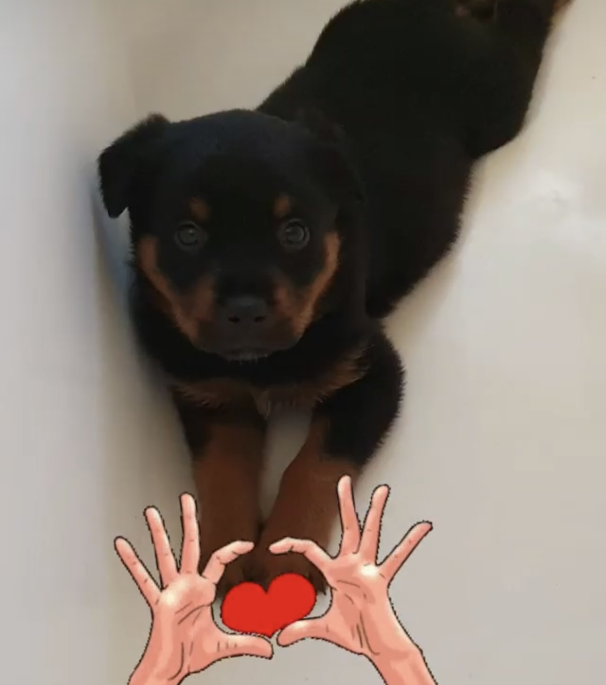
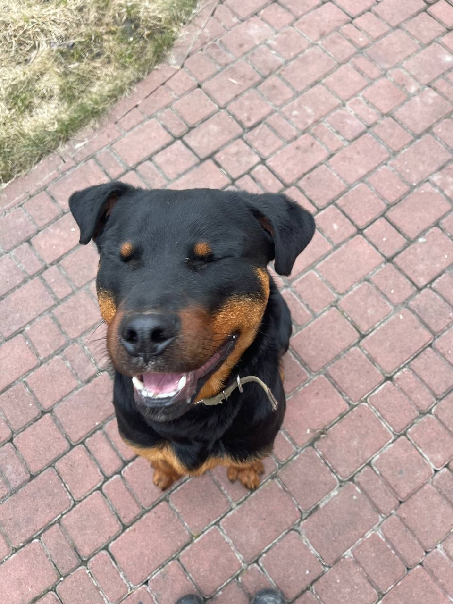

Ротвейлер

Ротве́йлер (нем. Rottweiler, досл. «из г. Ротвайль») — немецкая порода собак, относящаяся к группе молоссов, сформированная в районе города Ротвайль и на берегах реки Неккар
Собаки этого типа являются одними из самых древних в Германии, их происхождение уходит к собакам Римской Империи.
О породе
- История породы
- Внешний вид
- Характер
- Уход и здоровье
- Применение
- Любить
- Кормить
- Играть
- Ещё разок покормить
История породы
Собаки, схожие по фенотипу с современными ротвейлерами, сформировались в период Римской Империи. Считается, что именно эти собаки легли в основу кровей современных ротвейлеров. Активное распространение этих собак началось во время завоевательных походов легионов Клавдия Августа. Собаки этого типа использовались и целенаправленно выводились римлянами для сопровождения стад скота, которые должны были следовать за войсками для обеспечения их питания. Работа была направлена на отбор собак по наиболее сухому фенотипу. В 74 году н. э. после перехода через Альпы войска Клавдия Августа остановились на территории нынешней Германии, заняв долины вдоль реки Неккар, отличавшиеся мягким климатом и плодородной почвой. Тогда же вместе с войсками там появились и эти собаки. В силу того, что в регионе после этого начало активно развиваться скотоводство, получили дальнейшее развитие и эти собаки, популярность которых в новом регионе обитания росла все больше. В Средние века собаки этого фенотипа распространились по всей территории Германии. В это время их стали использовать не только в качестве скотогонных, но и в качестве охранных собак. Также в городах они использовались в качестве тягловых для перевозки небольших грузов и транспортировки уличных торговых тележек. В этом качестве они применялись в том числе для перевозки торговых тележек с мясом, откуда и появилось первое название данной породы — Metzgerhund, что в переводе означает «собака мясника». К середине XIX века с распространением железных дорог, на которых стали перевозить скот вместо традиционной перегонки, численность собак этого типа заметно упала, но определённую популярность у своих любителей они все равно сохраняли. На выставке собаки этого типа впервые были представлены под названием «собака мясника» в 1882 году в городе Хайльбронн. При этом там была представлена всего одна собака этой породы, так как их численность к тому времени очень сильно упала. Толчком к возрождению этой породы стал случай, произошедший в 1901 году: вахмистр германской полиции при помощи собаки этой породы разогнал целую толпу ведущих себя агрессивно матросов. Случай попал в публикации местных газет, дав толчок к повторному распространению этих собак, теперь уже в качестве охранных. Этот же случай стал и толчком к применению ротвейлеров в полиции. В это время порода имела два названия — как «собака мясника», так и «Ротвайльская собака». Это название было дано породе по названию города Ротвайль, в котором проводились крупные сельскохозяйственные ярмарки, на которых собиралось большое количество тех самых мясников, у которых работали эти собаки...
Внешний вид
Ротвейлер — это крупная, атлетически сложенная собака, производящая впечатление мощного и выносливого животного. Силуэт выглядит слегка приземистым, производя впечатление высокой устойчивости собаки. В состоянии покоя движения у эти собак кажутся чуть расхлябанными и ленивыми, однако в работе ротвейлеры показывают размашистые, не скованные, мощные движения. Ротвейлеры относятся к категории рабочих собак, для которых в рамках выставок обязательным является проведение рабочих испытаний, а отбор собак направлен главным образом на поддержание высоких рабочих качеств и физической гармоничности, позволяющей этим собакам выдерживать большие нагрузки. Высота в холке кобелей — 61—68 см, сук — 56—63 см. Вес кобелей — около 50 кг, сук — около 42 кг. Индекс растянутости — 103—105. Длина туловища, измеренная от грудной кости до седалищных бугров должна превосходить высоту в холке самое большее на 15 %[4]. Половой диморфизм хорошо выражен, кобели значительно массивнее и выше сук, зачастую имеют более рыхлый тип сложения. Голова умеренной длины, с широким выпуклым лбом и очень хорошо выраженным переходом от лба к морде. Скулы сильно выражены, с хорошо развитым рельефом мышц. Челюсти широкие, мощные, пасть широко открывается. Спинка носа прямая, почти без сужения. Мочка носа крупная, широкая, с хорошо открытыми ноздрями. Губы плотно прилегающие, рыхлые, мясистые. Уголки губ немного отвислые, образуют выраженные брыли. Нос, губы и веки всегда имеют чёрный цвет. Глаза небольшие, миндалевидные или круглые. Цвет — карий или тёмно-карий.
Характер
Ротвейлеры обладают спокойным и сильным характером, а также стабильной психикой. Собаки этой породы склонны демонстрировать доминантное поведение по отношению к своим сородичам, поэтому им необходима ранняя социализация и правильное построение взаимоотношений хозяина со щенком. К посторонним людям ротвейлеры недоверчивы, не склонны проявлять интерес к чужим людям и идти с ними на контакт. В семье собаки этой породы ласковы и контактны по отношению ко всем членам семьи, включая детей. Их удобно содержать в квартире, так как дома они не склонны устраивать активные игры, и даже если их им предложить, ротвейлер вряд ли будет готов поддержать такую игру. Активно играют, как правило, только щенки и молодые собаки, и главным образом в ответ на инициативу от человека. Ротвейлеры склонны к проявлению агрессии по отношению к людям и животным, поэтому прежде чем приступать к обучению собаки на защитные или караульные службы, необходимо предварительно добиться высокого уровня послушания собаки и высокой социализации. В противном случае после обучения на охрану собаки этой породы могут начать демонстрировать неуправляемую агрессию. При этом собаки данной породы хорошо и быстро усваивают новые навыки и команды, а также быстро запоминают паттерны поведения, что делает эту собаку одновременно хорошо подходящей для различных видов обучения и дрессировки и одновременно требующей от владельца и кинолога высокого уровня профессионализма, так как ротвейлер может быстро запомнить допущенный при обучении ошибочный способ выполнения команды или тип поведения, а исправить это в дальнейшем будет сложно.
Уход и здоровье
Собаки породы ротвейлер не требуют сложного специализированного ухода и подходят как в квартирах, так и в частных домах. Шерсть у собак этой породы достаточно вычёсывать один раз в неделю, нужно это главным образом для вычёсывания подшёрстка, чтобы тот не сыпался по квартире. Регулярного мытья также не требуется, это нужно делать только в случае загрязнения шерсти собаки.Стоит учитывать, что кожа ротвейлеров имеет большое количество сальных желёз, что делает этих собак не подходящими для тех, кто имеет выраженную аллергию на собак. Даже кратковременный контакт аллергиков с ротвейлерами может обернуться весьма неприятными последствиями.Выгул для этих собак нужен длительный, при этом преобладать должны интеллектуальные нагрузки, а вот большого количества физической активности этим собакам не нужно. Гулять с ротвейлерами можно в достаточно спокойном темпе.Ротвейлеры склонны к ожирению, поэтому необходимо тщательно следить за количеством потребляемой ими пищи и её калорийностью.К породным заболеваниям ротвейлеров относятся: дисплазия, артрит, рассекающий остеохондрит, сердечная недостаточность, сердечный ревматизм. С целью сокращения распространения гена дисплазии внутри породы при разведении ротвейлеров является желательным проведение генетического теста на определение гена дисплазии у обоих родителей. Для предотвращения проблем с суставами ротвейлерам важно дозировать, а зачастую и ограничивать, нагрузки на опорно-двигательный аппарат вплоть до полутора лет.
Источник информации Виккипедия
Фотограф Яна
Главный герой Марс